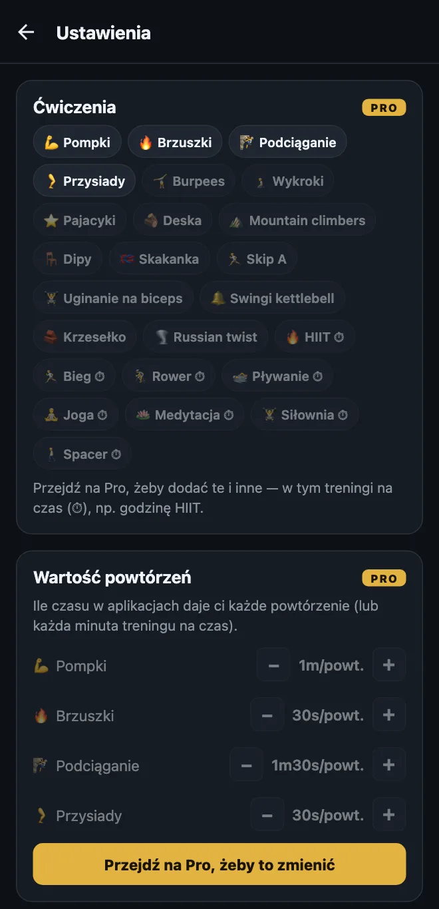
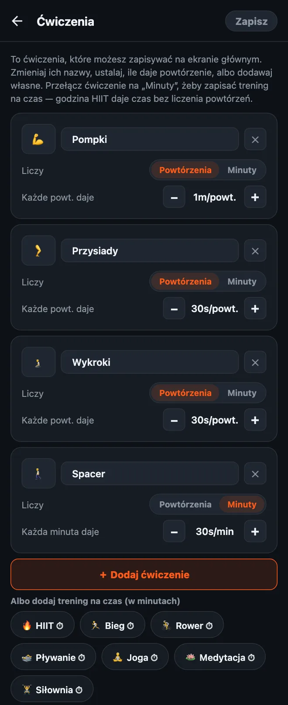

Jak dostosować ćwiczenia w HonorFit
Cześć wszystkim! HonorFit zaczął się u mnie jako blokada aplikacji za pompki: Instagram jest zablokowany, dopóki nie zrobię kilku pompek, a zapisuję je sam, na słowo honoru (bez kamery). Na start dostajesz cztery ćwiczenia: pompki, brzuszki, podciąganie i przysiady.
Ale nie każdy chce robić pompki. Może bolą cię nadgarstki, może wolisz burpees, a może przebiegłeś już dziś 8 km i chcesz, żeby to się liczyło. Jasne! Dlatego wszystko da się zmienić. Poniżej dokładnie jak, i co jest za darmo, a co wymaga Pro.
Co jest za darmo, a co w Pro
Powiem od razu: zmienianie ćwiczeń to funkcja Pro. Darmowa wersja ma cztery wbudowane ćwiczenia z takimi wartościami:
| Ćwiczenie | Każde powtórzenie daje (domyślnie) |
|---|---|
| 💪 Pompki | 1 minutę |
| 🔥 Brzuszki | 30 sekund |
| 🧗 Podciąganie | 1 minutę 30 sekund |
| 🦵 Przysiady | 30 sekund |
W darmowej wersji każde koło powtórzeń idzie do 20 na serię, a naraz możesz mieć w banku do 20 minut. Blokowanie, zapisywanie treningów i statystyki są za darmo na zawsze.
Pro kosztuje 3 USD miesięcznie albo 19,99 USD jednorazowo. To cena w USA: ceny różnią się w zależności od kraju i waluty, a sklep pokaże ci twoją. Pro pozwala dodawać, zmieniać nazwy i usuwać ćwiczenia, zmieniać, ile daje każde powtórzenie, zapisywać treningi na czas w minutach, podnosi limit kół do 100 na serię i znosi limit 20 minut. W Pro jest też parę innych rzeczy, ale ten wpis jest tylko o ćwiczeniach.

1. Otwórz edytor ćwiczeń
- Na ekranie głównym stuknij zębatkę w prawym górnym rogu, żeby otworzyć Ustawienia.
- Stuknij kartę Ćwiczenia na górze.
Zobaczysz po jednej karcie na każde ćwiczenie. Nic, co tu zmienisz, nie zadziała, dopóki nie stukniesz Zapisz w prawym górnym rogu, więc klikaj śmiało. Jeśli wyjdziesz bez zapisywania, nic się nie zmieni.

2. Zmień nazwę ćwiczenia albo jego emoji
Stuknij nazwę i wpisz, co chcesz. „Pompki” mogą zostać „Pompkami na kolanach” albo „Pompkami przy ścianie”, jeśli to właśnie robisz. Żeby zmienić ikonę, stuknij kwadracik z emoji po lewej i wybierz coś z siatki (jest tam ok. 40 emoji mniej więcej fitnessowych).
Drobiazg: nazwy wbudowanych ćwiczeń idą za językiem aplikacji, więc jeśli przełączysz telefon na angielski, „Przysiady” pokażą się jako „Squats”. Kiedy zmienisz nazwę, wyświetla się dokładnie to, co wpisałeś.
3. Ustal, ile czasu przed ekranem daje każde powtórzenie
Pod każdym ćwiczeniem jest Każde powt. daje z przyciskami − i +. Każde stuknięcie zmienia wartość o 5 sekund, a najniżej da się zejść do 5 sekund. Możesz więc ustawić burpees na 1m30s, a pajacyki na 10s, jak ci pasuje.
Same wartości możesz też zmienić bez otwierania edytora: w Ustawieniach, zaraz pod kartą Ćwiczenia, jest sekcja Wartość powtórzeń z tymi samymi przyciskami −/+.
4. Dodaj ćwiczenie
Są dwa sposoby:
- Stuknij „＋ Dodaj ćwiczenie”. Pojawi się nowa karta „Nowe ćwiczenie” warta 30 sekund za powtórzenie. Zmień nazwę i ustaw wartość.
- Stuknij propozycję. Pod przyciskiem jest rząd popularnych ćwiczeń, które dodasz jednym stuknięciem: Burpees, Wykroki, Pajacyki, Deska, Mountain climbers, Dipy, Skakanka, Skip A, Uginanie na biceps, Swingi kettlebell, Krzesełko i Russian twist. One też startują od 30 sekund za powtórzenie. Kiedy dodasz jedno, znika z propozycji.
Każde ćwiczenie dostaje własne koło na ekranie głównym, więc trzymałbym się mniej więcej czterech. Przy większej liczbie zaczynasz przewijać, żeby znaleźć to, którego szukasz.
5. Zapisuj treningi na czas (minuty zamiast powtórzeń)
O to pytacie mnie najczęściej. Niektórych aktywności po prostu nie liczy się w powtórzeniach: spacer, zajęcia jogi, bieganie, godzina na siłowni. Każda karta ma przełącznik Liczy: Powtórzenia | Minuty. Przestaw go na Minuty, a koło zacznie liczyć minuty, a wartość zmieni się na Każda minuta daje.
Są też propozycje treningów na czas na jedno stuknięcie (mają ⏱): HIIT, Bieg, Rower, Pływanie, Joga, Medytacja, Siłownia i Spacer.
Nowe treningi na czas startują od 30 sekund za minutę, więc godzina HIIT daje 30 minut w aplikacjach. Uwaga: kiedy przełączasz ćwiczenie między Powtórzeniami a Minutami, jego wartość wraca do 30 sekund, bo „1 minuta za powtórzenie” i „1 minuta za minutę” to dość różne układy. Po prostu ustaw ją jeszcze raz po przełączeniu.
Koło liczy pełne minuty, więc 30-sekundowa deska nie bardzo pasuje do Minut. Przy takich ćwiczeniach w podporze zostawiłbym Powtórzenia i sam zdecydował, czym jest jedno powtórzenie (np. jedno 20-sekundowe utrzymanie).
6. Usuń ćwiczenie albo zacznij od nowa
- Stuknij ✕ na karcie, żeby usunąć to ćwiczenie. Zawsze musi zostać co najmniej jedno.
- Przywróć domyślne na dole przywraca cztery pierwotne ćwiczenia z ich pierwotnymi wartościami. Jak wszystko tutaj, działa dopiero po stuknięciu Zapisz.
Jak ja bym dobrał wartości
Wartość to cena twoich aplikacji, więc chodzi o cenę, którą naprawdę zapłacisz, zamiast oszukiwać. Kilka punktów wyjścia:
- Trudniejsze ćwiczenia dają więcej. Podciąganie i burpees po 1m30s, pompki po 1m, przysiady i wykroki po 30s.
- Treningi na czas mniej więcej za połowę. 30 sekund za minutę oznacza, że 20-minutowy spacer kupuje ci 10 minut scrollowania. Jeśli spacer to nawyk, na którym najbardziej ci zależy, podbij go do 1 minuty za minutę.
- Jeśli łapiesz się na naciąganiu liczb, obniż cenę. To moja zasada przy systemie na słowo honoru. Zapisywanie powtórzeń, których nie zrobiłeś, znaczy, że cena jest zła, a nie że ty jesteś w tym słaby.
- Tryb trudny (Pro) jednym przełącznikiem w nagłówku obcina każdą wartość o połowę, jeśli chcesz mieć cięższy dzień bez edytowania wszystkiego.
Jeśli szukasz pomysłów na konkretne zestawy, napisałem jeszcze dwa wpisy: ćwiczenia Kegla i mostek biodrowy jako ćwiczenia do odblokowania oraz łagodne ćwiczenia dla tych, którym pompki nie leżą.
HonorFit Blocker to darmowa blokada aplikacji na iPhone'a i Androida. Na słowo honoru, bez kamery, nic nie opuszcza twojego telefonu. Własne ćwiczenia są w Pro. Nie jest dla każdego, ale może komuś z was się spodoba!